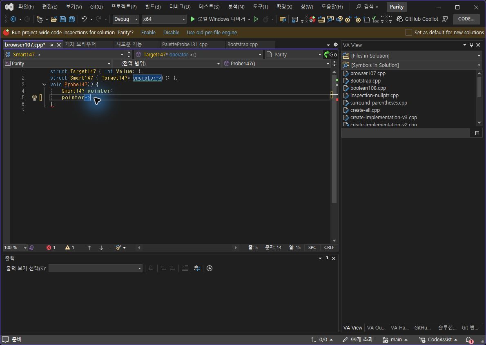
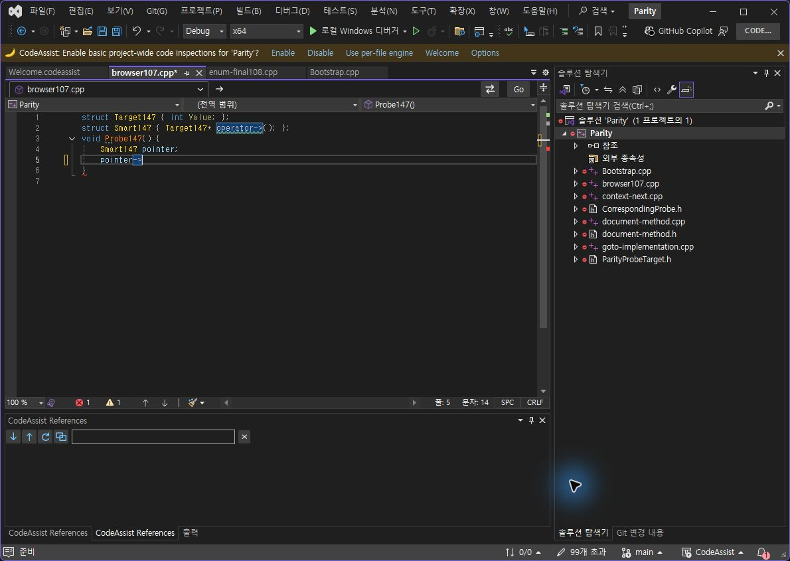
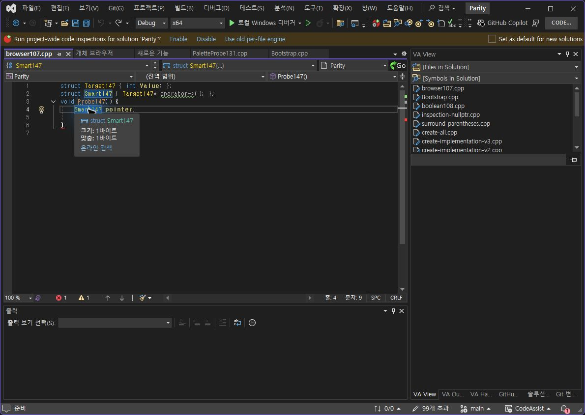
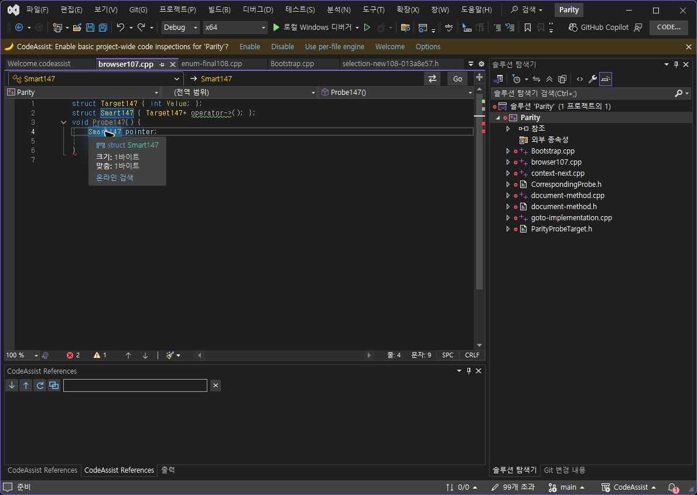
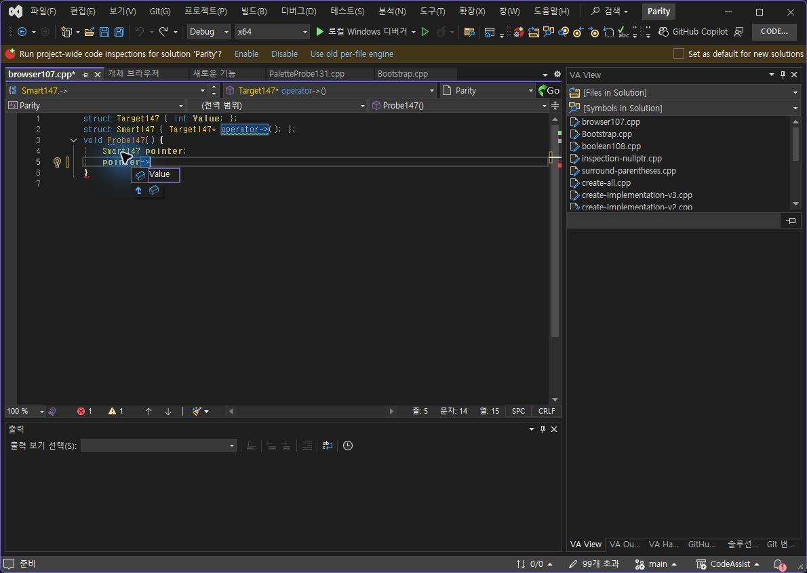
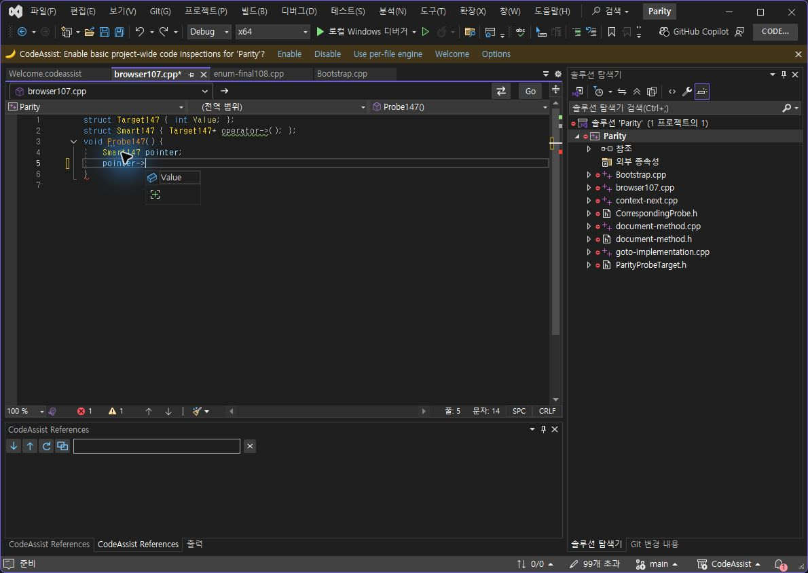
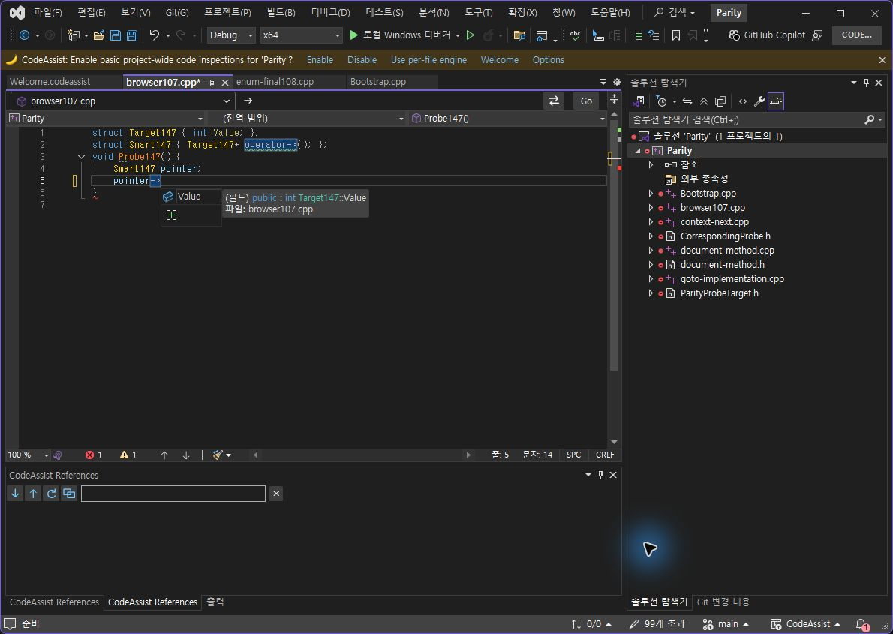

Tracefolio REPORTS & ISSUES
Tracefolio REPORTS & ISSUES실제 키 입력 대조 147
기존 기록 이전원문에 기록된 작업 내용과 당시 검증 범위를 정리한 보관 기록입니다.
VA·CA 옵션 실제 입력 대조 147 — 설치 CA 0.0.146
실제 키 입력 대조 147
설치 CA 0.0.146 · 기록 2026-10-24T05:58:19+09:00
과부하 화살표 변환: 2/2 상태 일치(100%). 같은 스마트 포인터에서 Off → pointer., On → pointer->. 전체 편집기 코드와 선택/커서 위치를 JSON으로 대조했습니다. 실행 취소는 VA 2회·CA 1회로 다릅니다.
선정 옵션 대조 근거: 7/12개(58.33%). 선정 On/Off 출력 확보: 6/12개(50%). 제품 전체 동기화율로 해석하지 않습니다. 이전 범위의 명세/검증을 최신 전체 실행으로 재인증하지 않았습니다.
새로 확인한 차이와 한계
CA의 Value 추천 후보는 색상 On에도 흰색입니다. 동일 VA On 상태 미촬영으로 해당 색상 일치는 미판정입니다.
기존 함수 툴팁의 CA 추가 행은 해결되지 않았습니다. 이번 타입 Off 표본은 양쪽 기본 VS 정보가 같지만 옵션 인과성 인증은 아닙니다.
네이티브 후보만 남는 추천 경로를 소스에서 확인했습니다. 해당 런타임 분기 추적과 수정·재검사가 남았습니다.
키 반복 실제 홀드·사용자 지정 색상·VA 사용자 스니펫 대조 등 전체 목표는 계속 진행 중입니다.
복원
시험 소스 두 개는 원본 해시 일치. CA 변경 설정은 원래 값, VA 색상 On 저장 후 재시작·옵션 화면으로 확인. 문서 저장 상태 확인. VA는 설정 저장 뒤 두 번 종료되어 검사 프로필만 복구했습니다.
정확한 판정 JSON · VA On 텍스트/커서 · CA On 텍스트/커서 · VA Off · CA Off · 이전 근거
화면
va-arrow-on
[ 
ca-arrow-on
[ 
va-tooltip-off
[ 
ca-tooltip-off
[ 
va-list-off
[ 
ca-list-off
[ 
ca-list-on
[ 
va-colors-restored
[](../assets/imports/docs/validation/options-147/va-colors-restored.png)
분석율: 문서·도움말 기반 부분 명세 108/108(100%). 전체 역분석 완료율과 다릅니다. XERJ 사용: SymbolQuickInfo·ColorListboxes 검색 후 현재 소스 확인.
제안 시간: 20~30분. 이번 기록까지 실제 20.7분. 전체 목표는 미완료입니다.
원문과 편집 이력
- 원문 SHA-256:
b2688deaccd8c802e1981e48da6152668401c1f52d436d79b4e345c75aade770 - 표시 날짜는 원본 파일의 수정 시각입니다. 작업 완료 시각은 원문에 있는 값을 기준으로 확인합니다.